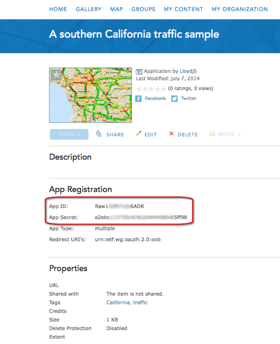

Hide Table of Contents
Hide Table of Contents
 Tutorials
About the API
Work with the API
Graphics and feature layers
Popups and Info Windows
Geoprocessor
Operations Dashboard
Create extensions
Mobile
ArcGIS Server Services
References
What's New archive
Tutorials
About the API
Work with the API
Graphics and feature layers
Popups and Info Windows
Geoprocessor
Operations Dashboard
Create extensions
Mobile
ArcGIS Server Services
References
What's New archive
This tutorial will help you resolve issues encountered when sharing publicly accessible maps that contain secured resources, without requiring a login from consumers of the map.
When sharing a map, sample, or a template, there may be various resources (layers via web services) that combine to show information. Sometimes there may be a resource that requires an ArcGIS Organizational account to access, such as current traffic conditions or an Esri demographics layer. If there is a resource in your map that consumes credits and/or requires privileges, then there will be additional configuration necessary if you do not want your users to be required to login to consume your map. One common approach is to force your application to use a proxy for these resources that require a login to access. Using this approach will hide the implementation details from the end user, yet authenticate to the service behind the scenes.
In this tutorial we will use the world traffic sample available in the ArcGIS API for JavaScript Help. This sample consumes a shared map hosted on ArcGIS Online that displays current traffic conditions for Southern California. We will use the proxy to provide an application login, so the end user does not have to provide credentials in order to view the current traffic conditions. Once completed with this tutorial, you will understand one approach to using the Esri resource proxy. The Esri resource proxy provides much more functionality than what is covered in this tutorial, so be sure to read more about the Esri resource proxy on GitHub.
- Download the Esri resource proxy from GitHub
- Register your item, obtain an application id and application secret
- Configure the Esri resource proxy for the world traffic sample
- Configure the world traffic sample to use the Esri resource proxy
- Configure and test world traffic sample
Download the Esri resource proxy from GitHub
Download the resource proxy from GitHub. The easiest method for obtaining the resource proxy is through the Releases page on GitHub. After you have downloaded the resource proxy, you will need to decide which version you want to configure.
Note:Before the resource proxy can be configured for your map, template, or application you must configure the resource proxy for your production and/or development environment. The resource proxy requires a web server configured to work with one of the web application server technologies (DotNet, Java, or PHP) listed above. For development environments WAMP (Windows: Apache, MySQL, and PHP) or LAMP (Linux: Apache, MySQL, and PHP) are convenient solutions, on Windows machines IIS and ASP.NET are sometimes included or easy to add to a system, configuring a servlet container (Java/JSP) often requires additional requirements. If you have an IT department, it may be able to provide you with one of the required web application server configurations.
Follow one of the install options for the Esri resource proxy:
Note:Before proceeding with the next section of this tutorial, you should have successfully tested the Esri resource proxy. If it did not work, then something may be misconfigured with your resource proxy.
Register your item, obtain an application id and application secret
The following steps are outlined under the Share -> Add items -> Add items from the web topic in the ArcGIS Help.
- Add an Item

- Specify the Item metadata

- Obtain the App ID and App Secret

Note:If you are already experienced using ArcGIS for Developers, you can also use the workflow for registering a new application to obtain an App ID and App Secret. After logging into ArcGIS for Developers, select Applications, and create a new application.
- Add an Item
Configure the Esri resource proxy for the world traffic sample
Note:It is important to understand which resources of your map would normally force a consumer to provide credentials or authenticate themselves to access a given resource. Understanding what resources require user privileges will help you effectively configure the resource proxy.
Earlier in this tutorial, (during the introduction) there was a discussion about understanding the resources in your shared map. The privileged resource (current traffic conditions) included in the shared map will need to be configured in the resource proxy now.
You will need to add an entry in the selected configuration (proxy.config for DotNet, Java, or PHP) for each resource in your shared map that requires privileges. Since our shared map displays the current traffic conditions of Southern California, we will need to add an entry in the proxy.config file to authenticate to the traffic service since accessing that resource consumes credits and requires privileges.
Make sure the entry below is in yourproxy.configfile.<!-- Note: update the url in the proxy config file based upon how you intend to access the service (http or https) --> <serverUrl clientId="acwK0z0sITpiNgy2" clientSecret="14f937fcb18040d3b5f0ba2ca2bfa462" rateLimit="0" rateLimitPeriod="1" matchAll="true" url="http://traffic.arcgis.com/arcgis/rest/services/World/Traffic/MapServer"/>
Note:The clientId and clientSecret was obtain in the previous step when registering an application within an ArcGIS Online organization (requires an ArcGIS Online organizational account). You will need to go through the previous steps to obtain your own clientId and clientSecret .
A rateLimitPeriod is the time period (in minutes) within which the specified number of requests sent with a particular referer will be tracked. The default value is 60 (one hour). A rateLimit is the maximum number of requests with a particular referer over the specified rateLimitPeriod. For more information, see the Esri resource proxy configuration settings.
Configure the world traffic sample to use the Esri resource proxy
In this tutorial, we will use the world traffic sample to demonstrate how to access the traffic resource from ArcGIS Online since that is a resource that requires privileges / login credentials. Download the source code for the world traffic sample. Move the sample to a virtual directory on the same web server where you configured your resource proxy.
Open the main file (index.html) and locate the section where we want to update the proxyURL to match your configuration:
- Search the file for proxyUrl syntax.
- Update the text for proxyUrl to match your resource-proxy-name (proxy, my-proxy, etc)
// -------------------------------------------------------------------- // Replace the text "/sproxy" // with your "/resource-proxy-name" // -------------------------------------------------------------------- urlUtils.addProxyRule({ urlPrefix: "traffic.arcgis.com", proxyUrl: "/sproxy" });Configure and test the world traffic sample
We are ready to finally test the resource proxy working with the world traffic sample. If all goes well, below is a high level description of what should take place in the web browser:
You will open the world traffic sample (http://webserver-name/ags_traffic/) in a web browser.
- webserver-name: The name of the web server where you deployed the resource proxy, as well as the sample used in this tutorial.
When the sample loads, and it attempts to load the world traffic service; the proxy rule will take affect and the ArcGIS API for JavaScript will know that it needs to invoke the Esri resource proxy to complete the request.
If you know how to use web developer tools inside the array of current browsers available, you can monitor the network traffic from this sample. Use your favorite web browser developer tool (Chrome - Developer Tools, Firefox - Firebug, Safari - Web Inspector, or Internet Explorer - Fiddler) to monitor the network traffic. Below is a screenshot showing the network traffic from this sample that was inspected using Chrome Developer Tools.
 You can see in the network panel that when the traffic.arcgis.com web service is invoked, the world
traffic sample then invokes the Esri resource proxy via the proxyRule setting.
You can see in the network panel that when the traffic.arcgis.com web service is invoked, the world
traffic sample then invokes the Esri resource proxy via the proxyRule setting.
This completes the tutorial. For more information, see the following resources: